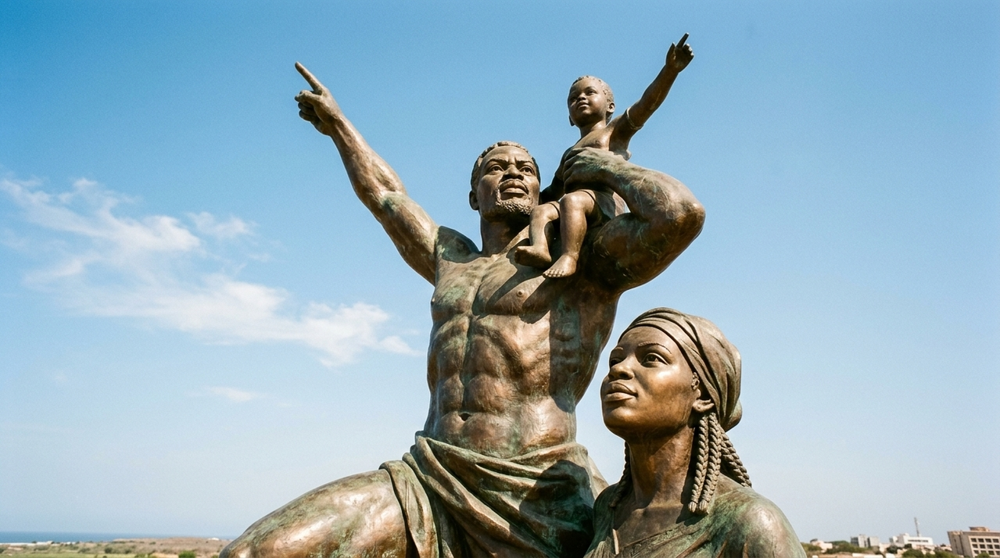
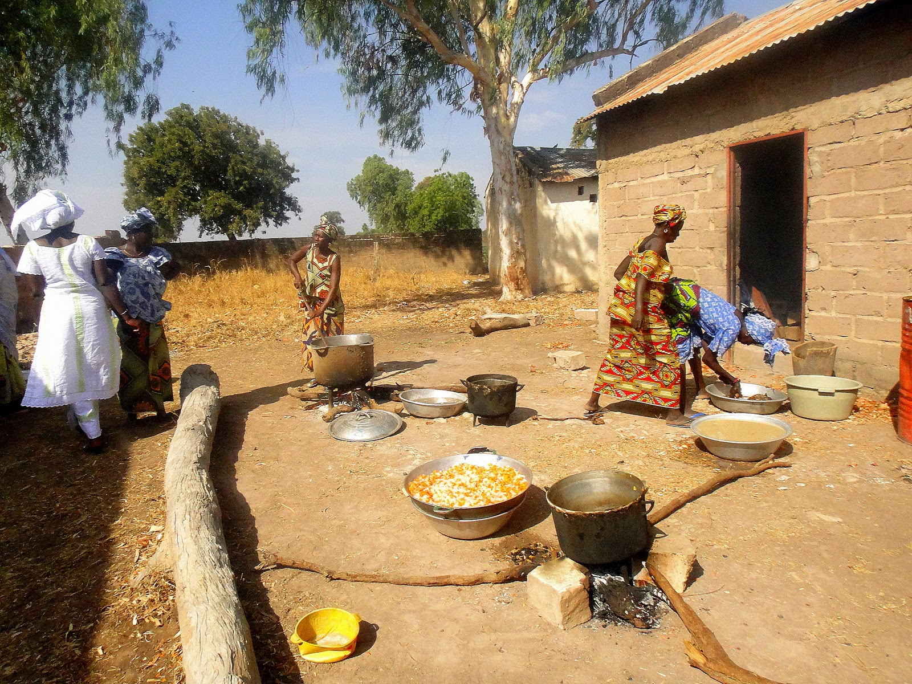
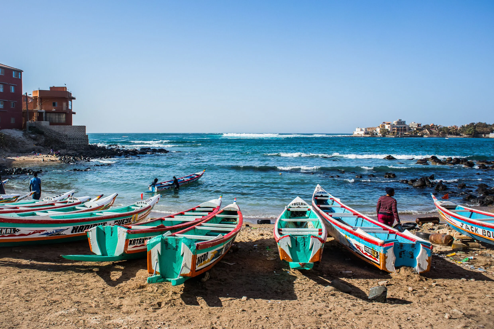

Senegal
Home
Cultura & História
Comida
Monumentos
Bem-vindo · Dalal ak diam
Senegal, a terra da Teranga
Hospitalidade, ritmo e sabores no extremo oeste da África.
17 mi
habitantes
14
regiões
Dakar
Capital
Explore o País

Cultura & História
Reinos, resistência e ritmo
Da Ilha de Gorée ao mbalax.

Comida
Sabores da Teranga
Thieboudienne, yassa, mafé e bissap.

Monumentos
Lugares para visitar
Lago Rosa, Gorée, Touba e muito mais.
❮
❯